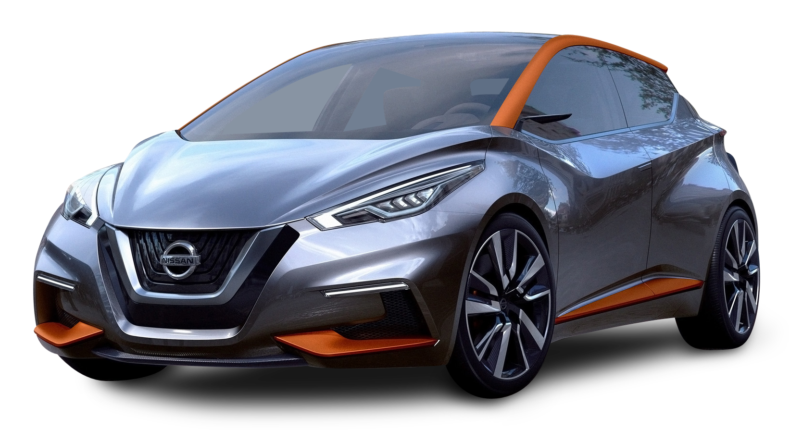

10. NISSAN

Nissan Motor Corporation is a japanese multinational automobile . Manufactured Headquater Nishi-ku, yokohoma, Japan .

| Trade Name : | Nissan Motor Corporation |
| Industry : | Automotive |
| Founded : | 26 december 1933 ; 89 years ago (under nissan group) |
| Founder : | Masujiro Hashimoto |
| Area Served : | World wide |
| Product : | Automobile, Luxury Vehicles, Commercial Vehicles, Outboard motor , forklift Trucks. |
| Key People : | Yasushi Kimura (chairman) ,Makoto Uchida ( President & CEO ) ,Ashwani Gupta ( COO & Chief Performance Officer ) |
| Division : | Nissan, Infinite Nismo, DatsunNissan, Infinite Nismo, Datsun |
| Website : | nissan-global |
Since 1999, Nissan has been a part of the Renault -Nissan-Mitsubishi Alliance ( Mitsubishi joining in 2016) , with Renault of France. since October 2016 Nissan
has held a 34% controlling stake in Mitsubishi Motors.
⬤ In 2013, Nissan was the sixth largest automaker in the world, after Toyota, General Motors, Volkswagen Group, Hyundai Motor Group and Ford.
⬤ In 2014, Nissan was the largest Car manufacturer in North America.
⬤ As of April 2018, Nissan was the World's largest electrical vehicle (EV) manufacturer, with a gobal sales of more than 32,000 all-electrical vehicles.
⬤ The Top-selling vehicle of the car-maker's fully-electrical lineup is the Nissan LEAF, the No. 2 top-selling electrical car globally, just behind the Tesal Model 3.